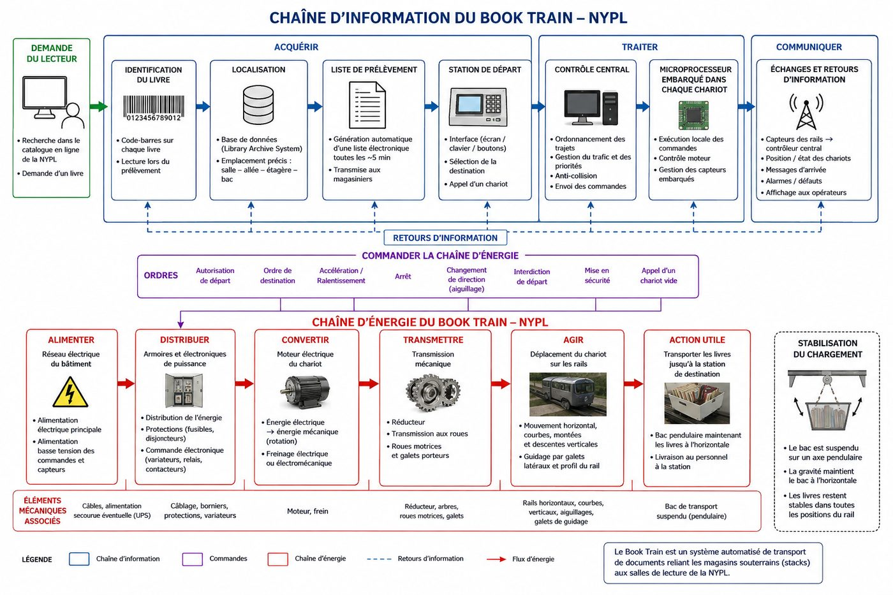

🗽 La situation déclenchante
À Fort-de-France, la bibliothèque Schœlcher — joyau de fer et de mosaïques dessiné par Pierre-Henri Picq, présenté à Paris en 1889 puis remonté pièce par pièce en Martinique — conserve des milliers d'ouvrages précieux, dont le legs de Victor Schœlcher lui-même.
Mais acheminer ces livres fragiles entre réserves et salles de lecture, dans un monument historique où l'on ne perce pas un mur sans autorisation, reste un casse-tête quotidien.
Bonne nouvelle : des mécènes proposent de financer une modernisation.
Avant de dessiner quoi que ce soit, la Collectivité charge ton équipe projet d'étudier le meilleur système du monde.
Ce système existe. Direction New York. 🗽
Sous la pelouse de Bryant Park, à New York, dorment des kilomètres de rayonnages : les Milstein Stacks.
Quand un lecteur commande un livre depuis la majestueuse Rose Main Reading Room, au 3e étage du bâtiment principal, l'ouvrage doit traverser un tunnel, grimper le long des murs et franchir les plafonds… en restant parfaitement à plat pour ne pas abîmer les livres rares.
Aux deux bouts du voyage, deux personnes se relaient : au sous-sol, le magasinier des stacks charge la nacelle ; au 3ᵉ étage, le bibliothécaire du comptoir la reçoit.
Depuis 2016, ce voyage est assuré par le « Book Train » : 24 wagonnets électriques rouges circulant sur 950 pieds de rails — à toi de convertir en mètres ! (réponse : ≈ 290 m), à environ 23 mètres par minute.
Le mot « train » est un surnom : chaque wagonnet roule seul, avec jusqu'à 13,6 kg de documents, et l'automate les espace pour qu'ils ne se percutent jamais.
Grâce à une suspension à cardan, la nacelle reste horizontale à 360°, même quand le rail monte à la verticale.
💰 Coût du projet : 2,6 millions de dollars — soit, en arrondissant, ≈ 3 millions $ (environ 2,4 millions d'euros).
Retiens l'ordre de grandeur : arrondir pour comparer, c'est le premier réflexe de l'ingénieur.
Oui, tu as bien lu : une équipe d'ingénieurs de haut niveau, des mois d'études et un budget de plus de deux millions… pour livrer des livres.
Cher ? Peut-être.
Mais compare : transporter à la main des ouvrages rares et fragiles sur 290 mètres de rail et 11 niveaux, des centaines de fois par jour, pendant des décennies — les ingénieurs, eux, ont fait le calcul.
Tu te feras ton avis en fin de séquence.
Ta mission d'équipe projet : comprendre et expliquer clairement ce système automatisé — car on ne peut adapter à Fort-de-France que ce qu'on a d'abord compris à New York.
Bienvenue dans l'équipe.
📎 Les chiffres du Book Train viennent du communiqué de la New York Public Library du 21 septembre 2016 (en anglais).
🎬 Le vrai Book Train, en vidéo (~5 min)
🌐 Cette activité demande une connexion Internet — la vidéo est sur YouTube. Sans connexion : réponds avec la situation ci-dessus : les deux réponses y sont écrites.
New York Public Library installed a book train conveyor system
Tech Insider (YouTube), 29 septembre 2016 — vidéo relayée par la revue Poets & Writers
Ce qu'il faut regarder
Ne cherche pas à tout comprendre : regarde les wagonnets. La vidéo dure 1 min 44 s, sans voix ; ses phrases, écrites en anglais, sont traduites juste en dessous.
Deux questions, et seulement deux : roulent-ils accrochés les uns aux autres ou chacun seul ? Et vers 0:54, quand le rail monte à la verticale, que fait la nacelle rouge qui porte les livres ? Réponds juste en dessous.
▶ Ouvrir la vidéoSi la vidéo ne s'ouvre pas
Tu peux répondre sans elle : relis le paragraphe « Depuis 2016… » de la situation, juste au-dessus. Les deux réponses y sont écrites.
🇫🇷 Les phrases de la vidéo, traduites en français
La vidéo dure 1 min 44 s et personne n'y parle : ses phrases sont écrites dans l'image, en anglais.
Les sous-titres de YouTube ne peuvent donc pas les traduire. Les voici dans l'ordre, avec le moment (environ) où chacune apparaît.
- 0:09Coup d'œil sur le nouveau système qui livre les livres de la bibliothèque publique de New York.A look inside New York Public Library's new book delivery system
- 0:18Le bâtiment Stephen A. Schwarzman de la bibliothèque a une nouvelle façon d'aller chercher les livres.The New York Public Library's Stephen A. Schwarzman Building has a new method for fetching books
- 0:26Elle a installé un convoyeur de wagonnets à livres pour livrer les documents d'étude…They've installed a conveyor system of book-carts to deliver research material
- 0:31… depuis les réserves Milstein (les rayonnages, sous le parc)…from the Milstein Research Stacks
- 0:34… jusqu'à la grande salle de lecture Rose.to the Rose Main Reading Room
- 0:38Les lecteurs demandent des livres précis ; le personnel de la bibliothèque va les chercher dans les rayonnages…Visitors can request specific books, which will be pulled from the stacks by NYPL staff
- 0:44… et les dépose dans un wagonnet.and placed into a cart
- 0:48Une pression sur un bouton, et le wagonnet file dans le bâtiment.With the push of a button, the cart jets off into the building
- 0:54Il pivote de 90° pour grimper le rail, le long du mur.It turns 90° to climb the tracks up the wall
- 0:58Le wagonnet se balance pour garder les documents à l'intérieur.The cart sways to keep the material inside
- 1:04Le système compte 950 pieds de rail (≈ 290 m), à l'horizontale comme à la verticale…The system has 950 feet of both horizontal and vertical track
- 1:10… et 24 wagonnets qui portent chacun jusqu'à 30 lb (≈ 13,6 kg).and 24 cars that can carry 30 lbs each
- 1:14Les wagonnets avancent de 75 pieds par minute (≈ 23 m par minute)…The cars move 75 feet per minute
- 1:20… à travers 11 niveaux de la bibliothèque…through 11 levels of the library
- 1:24… en 5 minutes environ.in about five minutes
- 1:28Le système complet a coûté environ 2,6 millions de dollars.The whole system cost about $2.6 million
- 1:34Il entrera en service à la réouverture de la salle Rose, restaurée.It will open with the restored Rose Reading Room
- 1:40Générique : une vidéo de Tech Insider, tournée avec l'aide de la bibliothèque.Producer Rob Ludacer · Additional footage Jonathan Blanc · Special thanks NYPL
📏 Les unités américaines, converties : 1 pied ≈ 30 cm ; 1 lb ≈ 0,45 kg.
Attention : « lb » se lit « livre », mais c'est une unité de masse — rien à voir avec les livres qu'on lit !
✅ Correction complète
1. Chacun seul.
Le mot « train » est un surnom : chaque wagonnet voyage seul, et l'automate garde de l'espace entre deux wagonnets pour qu'ils ne se percutent jamais.
Tu retrouveras cette décision dans la chaîne d'information (séance 2) et dans les tests de l'algorigramme (séance 3).
2. Elle reste à l'horizontale.
La nacelle est suspendue et pivote (suspension à cardan) : quand le rail se redresse, elle tourne sur son axe et garde les livres à plat.
C'est la solution technique de la fonction « maintenir les livres à plat » — tu la retrouveras dans l'activité 1.3.
🔀 Trois façons de vivre la séquence
💭 Ton hypothèse de départ
Avant de commencer, écris ton hypothèse. Tu la retrouveras au bilan pour la confronter à ce que tu auras appris.
🪜 Version étayée — des phrases à compléter
Le niveau attendu est exactement le même : on retire l'obstacle de la rédaction, pas l'exigence. Recopie ces débuts de phrase dans le cadre et complète-les.
« Je pense que le wagonnet sait où aller parce que ______.
L'information de destination vient de ______.
Ce qui lui permet de savoir qu'il est arrivé, c'est ______. »
💾 Tout ce que tu écris sur cette page est sauvegardé automatiquement sur cet ordinateur (rien n'est envoyé sur internet).
🎫 Billet d'entrée — je vérifie mes acquis de 5e (4 min, sans note)
Trois questions, aucune note : juste un aiguillage. Ce que tu as vu en 5e sur les objets techniques suffit largement.
3 bonnes réponses : tu enchaînes sur l'activité 1.1.
2 ou moins : ouvre la capsule « Je révise la 5e en 3 minutes » juste en dessous — et tu repars à égalité.
🎒 Je révise la 5e en 3 minutes
Une fonction technique dit ce qu'une partie de l'objet doit faire — et non à quoi l'objet sert pour son usager, qui est une autre notion.
On l'écrit avec
un verbe : « soutenir la charge », « détecter la présence ».
La solution technique, elle,
dit avec quoi on le fait : le rail, le capteur, le moteur.
Un capteur recueille une information — une présence, une distance, une température — et la transmet au système. Il ne fait rien bouger : c'est l'actionneur qui agit.
L'énergie électrique peut changer de forme : elle devient du mouvement dans un moteur,
de la lumière dans une lampe, de la chaleur dans un radiateur.
C'est ce changement de forme qu'on appelle
une transformation d'énergie — et c'est le cœur de l'activité 2.1.
🧭 Le plan de ta mission
Séance 1 — Décoder le système : le trajet d'un livre, qui informe, qui agit, quelle solution pour quelle fonction.
Séance 2 — Suivre l'énergie de bloc en bloc, puis construire les deux chaînes (énergie, information) dans draw.io.
Séance 3 — Traduire le trajet du livre en algorigramme normalisé avec draw.io.
Séance 4 — Exporter ton algorigramme dans le bon format de fichier (et savoir le justifier !), puis construire ton diaporama de 6 diapositives.
Séance 1 — Décoder le Book Train
📄 Document d'appui — le schéma d'ensemble du système
① Observe ce schéma d'ensemble du Book Train.
② Repère la chaîne d'information (en haut : Acquérir → Traiter → Communiquer), les ordres qui descendent, et la chaîne d'énergie (en bas). Les activités des séances 1 et 2 s'appuient dessus.
![Schéma d'ensemble du Book Train de la NYPL : en haut la chaîne d'information (demande du lecteur, acquérir avec identification du livre, localisation, liste de prélèvement et station de départ ; traiter avec contrôle central et microprocesseur embarqué ; communiquer avec échanges et retours d'information), au centre les ordres envoyés à la chaîne d'énergie, en bas la chaîne d'énergie (alimenter, distribuer, convertir, transmettre, agir, action utile) avec la stabilisation pendulaire du chargement.](fichiers_drawio/schema_ensemble_book-train.jpg)
Trois points restent à préciser, et c'est TOI qui vas les préciser dans les activités : l'énergie qui entre dans ALIMENTER (480 V (volts) ~), le trajet exact des ordres, et les retours d'information.
Activité 1.1 — Le trajet d'un livre, dans l'ordre (~15 min)
📖 Rappel de la mission (situation déclenchante)
« Quand un lecteur commande un livre depuis la Rose Main Reading Room, au 3ᵉ étage, l'ouvrage doit traverser un tunnel, grimper le long des murs et franchir les plafonds… en restant parfaitement à plat. »
Attention, deux personnes différentes encadrent le voyage : au sous-sol, le magasinier des stacks charge la nacelle ; au 3ᵉ étage, le bibliothécaire du comptoir reçoit le livre et prévient le lecteur.
🎯 4e_C4 (compétence-mère — mise en route) — Décrire et caractériser l'organisation interne d'un objet ou système technique et ses échanges avec son environnement (énergies, données) : tu remets d'abord le fonctionnement global dans l'ordre, avant d'identifier les chaînes (activités suivantes, 4e_C4.1 · 4e_C4.4).

Pour chaque position, de 1 à 6, choisis l'étape qui s'y déroule.
Les réponses possibles — choisis une lettre pour chaque ligne :
- ALe magasinier dépose le livre dans un wagonnet vacant
- BLe lecteur commande le livre depuis un terminal de la salle de lecture
- CLe wagonnet vide repart automatiquement vers le sous-sol
- DLe wagonnet traverse le tunnel puis monte à la verticale
- ELe magasinier trouve l'ouvrage dans les rayonnages souterrains
- FLe bibliothécaire du 3ᵉ étage remet le livre au lecteur
🖐 Aide niveau 1
✋ Aide niveau 2
✅ Correction complète (à ouvrir après vérification)
1. Commande — sans demande du lecteur, rien ne se déclenche : c'est l'événement déclencheur du système.
2. Recherche — le magasinier du sous-sol localise l'ouvrage : une étape humaine, le système est automatisé mais pas entièrement autonome.
3. Dépôt dans un wagonnet vacant — remarque le mot vacant : il faudra un test dans ton algorigramme (« un wagonnet libre est-il disponible ? »).
4. Trajet — tunnel horizontal puis montée verticale, nacelle maintenue à plat par le cardan.
5. Remise au lecteur — la sortie utile du système.
6. Retour automatique — le wagonnet redevient disponible : le système boucle, il est prêt pour la commande suivante.
Activité 1.2 — Qui informe, qui agit ? (~10 min)
🎯 4e_C4.4 — Identifier les constituants de la chaîne d'information d'un objet réel et les associer à leur fonction.
📐 Le mot officiel : ces schémas s'appellent des diagrammes fonctionnels — c'est LA représentation attendue par la compétence 4e_C4.1 : chaque bloc porte une fonction (un verbe à l'infinitif !), les flèches portent les flux.
Quand un sujet d'évaluation dit « complète le diagramme fonctionnel », c'est de ceci qu'il parle.
Cherche chaque élément dans un bloc : la chaîne où il se trouve, c'est ta réponse. Clique dessus pour l'agrandir.
🖐 Aide niveau 1
✋ Aide niveau 2
✅ Correction complète
Information : le terminal (acquérir la demande), la destination programmée (traiter/mémoriser), les capteurs de station (acquérir la position). Ces éléments manipulent des données, pas de la puissance.
Énergie : le moteur électrique (convertir l'énergie électrique en mouvement), le rail alimenté (il porte le wagonnet et lui amène l'énergie électrique ; c'est l'armoire de commande qui DISTRIBUE, sur ordre).
C'est la chaîne d'information qui donne l'ordre — la flèche descend vers la chaîne d'énergie, jamais l'inverse.
⚠️ Pièges classiques — à ouvrir avant de vérifier
Activité 1.3 — Le diagramme fonctionnel : quelle solution pour quelle fonction ? (~12 min)
🎯 5e_C4.1 (rappel de 5e) — Associer des solutions techniques à une ou des fonctions techniques.
Pour chaque fonction technique, choisis la solution technique que les ingénieurs ont retenue.
(En 3e, tu ajouteras une colonne « fonction d'usage » à gauche pour bâtir le schéma-bloc complet — compétence 3e_C4.1.)
| Fonction technique | Solution technique (tensions en volts, V) |
|---|---|
| Fournir une énergie exploitable par le système | |
| Soutenir et guider le wagonnet sur tout le parcours | |
| Mettre le wagonnet en mouvement | |
| Adapter la vitesse et l'effort au rail | |
| Maintenir les livres à plat, même à la verticale | |
| Détecter la position du wagonnet |
🖐 Aide niveau 1
✋ Aide niveau 2
Séance 2 — Les deux chaînes du Book Train, dans draw.io
En séance 1, tu as rangé chaque élément du Book Train dans sa chaîne et associé chaque solution à sa fonction.
Aujourd'hui, tu passes de l'observation à la construction : d'abord l'énergie, bloc par bloc, puis les deux chaînes, que tu dessines toi-même.
Activité 2.1 — Que devient l'énergie entre les blocs ? (~10 min) 4e_C4.2
🎯 4e_C4.2 — Repérer les transformations d'énergie et les flux d'énergie au sein de l'OST.
① Regarde bien les schémas : les blocs fonctionnels ne contiennent QUE la fonction et la solution technique — les énergies, c'est TON travail (c'est la compétence
4e_C4.2).② Remplis le tableau : pour chaque bloc, l'énergie qui entre et celle qui sort.
③ Repère où l'énergie change de forme (de l'électrique au cinétique). Ces énergies sont exactement les étiquettes que tu poseras sur les flèches de TON diagramme (activité 2.2).
L'énergie, c'est toi qui la trouves. Clique dessus pour l'agrandir.
Pour chaque bloc, choisis l'énergie qui entre et l'énergie qui sort.
| Bloc fonctionnel | ⬅ Énergie d'entrée | Énergie de sortie ➡ |
|---|---|---|
| ALIMENTER convertisseur 480 V (volts) / 24 V | ||
| DISTRIBUER armoire : contacteurs, relais, variateur | ||
| CONVERTIR moteur électrique | ||
| TRANSMETTRE réducteur + galets |
🖐 Aide niveau 1
✋ Aide niveau 2
✅ Correction complète
Compare-la, flèche par flèche, avec ton tableau.
ALIMENTER : entre de l'électrique alternative — 480 V ~ triphasé, la tension habituelle des grands bâtiments américains, l'équivalent de notre 400 V triphasé.
Sort de l'électrique continue — bus 24 V ⎓, la seule tension que la bibliothèque publie : ses wagonnets roulent en 24 V continu.
Entre les deux, son convertisseur 480 V ~ → 24 V ⎓ (transformateur + redresseur + lisseur).
L'énergie reste électrique : même forme d'énergie ; seuls le type de courant (alternatif → continu) et la tension changent.
À noter : dans ce genre d'installation, ALIMENTER fournit aussi une alimentation à part, souvent secourue par un onduleur, pour l'automate et les capteurs — le cerveau ne doit jamais s'éteindre.
DISTRIBUER : entre du 24 V ⎓, sort du 24 V ⎓… modulé (MLI). Ses contacteurs, relais et variateur ne transforment pas l'énergie : ils l'autorisent, la modulent, l'inversent — sur ORDRE. C'est le portier de la puissance, pas son cuisinier.
🔬 Pour les curieux — comment « module »-t-on ? (le fameux MLI du schéma)
Par MLI (PWM) — en toutes lettres : Modulation de Largeur d'Impulsion, Pulse Width Modulation.
Le variateur hache le 24 V en impulsions ultra-rapides, des milliers de fois par seconde.
Plus les impulsions sont larges, plus le moteur reçoit d'énergie en moyenne — et plus il va vite.
On ne baisse pas la tension (une résistance gaspillerait tout en chaleur) : on joue sur le temps de passage.
Métaphore : on ne dose pas l'eau en écrasant le tuyau, on ouvre et ferme le robinet très vite.
C'est la technique de TOUS les moteurs modernes, de la trottinette au TGV.
CONVERTIR : entre de l'électrique continue (24 V ⎓), sort de la rotation.
C'est LA conversion : l'énergie change de forme — électrique → cinétique.
On dit aussi « mécanique » : c'est le mot qui couvre le mouvement (cinétique) et la hauteur (potentielle).
C'est pour cela que le bloc s'appelle CONVERTIR ! (Le programme de technologie dit aussi la « nature » de l'énergie : c'est le même sens.)
TRANSMETTRE : entre de la rotation (rapide, peu de couple), sort de la translation du wagonnet (l'avancée sur le rail). Le réducteur adapte, les galets transmettent : l'énergie reste cinétique, c'est le type de mouvement qui change.
📐 Sur ton diagramme fonctionnel, écris ces énergies sur les flèches entre les blocs : une flèche sans étiquette est une flèche muette.
4e_C4.2.⚠️ Pièges classiques — à ouvrir avant de vérifier
- « le redresseur convertit donc c'est CONVERTIR » — non : AC → DC reste de l'électricité (seul le type de courant change, dans ALIMENTER) ; CONVERTIR est réservé au changement de forme d'énergie (électrique → cinétique).
- « Le variateur transforme l'énergie » — non : il la module (MLI), sur ordre.
- « Il y a un convertisseur dans ALIMENTER, donc c'est le bloc CONVERTIR » — attention au mot-piège : le convertisseur 480/24 V change le type de courant et la tension (l'énergie reste électrique) ; le bloc CONVERTIR est réservé au changement de forme d'énergie (électrique → cinétique).
- « Le wagonnet tourne » — non : ses galets tournent (rotation), le wagonnet avance (translation).
- « Aux États-Unis, le réseau est en courant continu » — non : le réseau électrique est alternatif partout dans le monde (États-Unis : 120 V · 60 Hz (hertz) ; France : 230 V · 50 Hz).
Clin d'œil d'histoire : Edison défendait le continu, Tesla et Westinghouse ont gagné avec l'alternatif… et New York fut la dernière ville à débrancher les vestiges du réseau continu d'Edison, en 2007 !
🔁 Piqûre de rappel (~5 min) — Quel constituant dans CONVERTIR ? Les cinq conversions du programme, juste après l'activité 2.1 : ouvre-la.
4e_C4.2 Dans le Book Train, c'est le moteur qui CONVERTIT.
Le programme te demande d'en connaître cinq : le moteur électrique, la lampe, le radiateur, la génératrice, le vérin.
Pour chaque besoin, choisis celui qui va dans le bloc CONVERTIR.
🔁 Le tableau des cinq conversions (vu en 5e) — ouvre-le si tu ne t'en souviens plus
✅ Correction complète
① Faire avancer le wagonnet → le moteur électrique : électrique → cinétique.
Il en sort un mouvement.
② Éclairer le quai → la lampe : électrique → lumineuse.
③ Chauffer l'armoire → le radiateur : électrique → thermique.
La chaleur est son but.
④ Produire du courant avec l'éolienne → la génératrice : mécanique → électrique.
Le vent fait tourner les pales, les pales font tourner la génératrice.
⑤ Ouvrir la porte du bus → le vérin : pneumatique → mécanique.
L'air comprimé pousse sa tige, la tige pousse la porte.
★ Le chemin inverse du moteur → la génératrice.
Le moteur change du courant en mouvement ; la génératrice change un mouvement en courant.
Tous, sauf le radiateur, perdent un peu d'énergie en chaleur.
On dit aussi « mécanique » à la sortie d'un moteur ou d'un vérin : c'est le mot qui couvre le mouvement (cinétique) et la hauteur (potentielle).
Activité 2.2 — Complète TA chaîne d'énergie (~15 min) 4e_C4.1
🎯 4e_C4.1 — Identifier les constituants d'une chaîne d'énergie et les associer à leurs fonctions.
① Ouvre
chaine_energie_a_completer.drawio (bloc 📥 de l'activité 2.3) : quatre blocs vides t'attendent, avec trois réserves d'étiquettes.② Place les fonctions.
③ Associe les composants (ton diagramme fonctionnel de l'activité 1.3 t'y aide !).
④ Étiquette les énergies sur les flèches (ton tableau 2.1 les contient toutes).
C'est LE geste de la compétence
4e_C4.1 : une chaîne d'énergie complétée de ta main.Les énergies viennent de ton tableau 2.1. Clique dessus pour l'agrandir.
🖐 Aide niveau 1
✋ Aide niveau 2
✅ Correction complète
chaine_energie_book-train.drawio, complet : c'est ce que ton fichier doit montrer une fois rempli.📥 Le même modèle, dans draw.io — télécharge-le, ouvre-le et pose-le à côté de ton fichier :
Compare ton fichier au modèle chaine_energie_book-train.drawio (bloc 📥), bloc par bloc puis flèche par flèche. Les trois vérifications qui comptent :
① la transformation AC → DC est dans ALIMENTER (pas dans Distribuer !) ;
② DISTRIBUER contient les organes de commande de puissance — c'est lui qui reçoit la flèche d'ORDRES ;
③ le changement de forme de l'énergie n'a lieu qu'une fois : CONVERTIR.
Activité 2.3 — Le schéma oublié : ajoute les capteurs dans draw.io 🛠️ (~15 min)
🎯 4e_C4.4 — Identifier les constituants de la chaîne d'information d'un objet réel et les associer à leur fonction.
🧭 Besoin d'aide pour ouvrir les fichiers, tracer une flèche ou trouver une forme ? Le Guide draw.io pas à pas complet (avec captures) t'attend en séance 3, activité 3.2 — les étapes A à G couvrent tout, de l'ouverture à l'animation.
👀 L'œil de l'ingénieur : regarde bien la Fig.
1 en haut de la séance 1… elle ne montre aucun capteur ! Pourtant, sans capteurs, le wagonnet est aveugle : impossible de savoir où il est ni si le poste de chargement est libre.
Un schéma incomplet, ça se répare — et c'est ton travail d'aujourd'hui.
🖼 Le modèle à imiter — la chaîne d'énergie du Book Train, dessinée dans draw.io (Fig. 4) : ouvre-le pour copier la convention
📥 Tes fichiers de travail — clique pour les télécharger sur cet ordinateur (aucune connexion nécessaire, ils sont embarqués dans cette page) :
Les fichiers sont vierges de toute numérotation — si des pastilles jaunes apparaissent chez toi, c'est un réglage d'affichage : panneau Diagramme (rien de sélectionné) → décoche Numbered.
① Ouvre
chaine_information_a_completer.drawio dans draw.io.② Complète la chaîne d'information, étape par étape.
③ Coche chaque étape quand elle est faite.
④ Vérifie.
🖐 Aide niveau 1
✋ Aide niveau 2
flowAnimation=1; à la fin. Si les tirets circulent à l'envers, c'est que ta flèche a été tracée dans le mauvais sens : clic droit → Inverser la direction.✨ Finition premium (facultatif — pour viser le niveau ingénieur)
Un schéma « premium » ne se reconnaît pas à ses décorations, mais à sa cohérence. Quatre gestes draw.io, quatre règles :
① Un style, puis partout.
Soigne UN rectangle (sélection → panneau Style : coins arrondis, épaisseur du trait, couleur de remplissage douce)… puis clic droit → Copier le style, et Coller le style sur tous les blocs de même rôle.
Règle : même rôle = même style — tous les blocs d'information se ressemblent, tous les blocs d'énergie se ressemblent.
② Une palette, pas un arc-en-ciel.
Trois couleurs maximum : une pour l'information, une pour l'énergie, une pour les ordres.
Le rouge est réservé à l'ORDRE — s'il est partout, il n'alerte plus nulle part.
③ Aligner, c'est respirer.
Sélectionne plusieurs blocs → onglet Arranger → Aligner et Distribuer : des espacements réguliers, et l'œil comprend la structure avant même de lire.
Les guides bleus de draw.io t'aident pendant le déplacement.
④ L'animation au service du sens. Tes flèches animées (étape 5) montrent la direction du flux — c'est leur seul travail. Si une animation n'explique rien, retire-la.
🎯 Test final du premium : montre ton schéma 5 secondes à un camarade, puis cache-le. S'il peut te dire qui commande et qui exécute, c'est gagné.
🎓 Et ce n'est pas pour rien : dès cette année en 4ᵉ, puis en 3ᵉ, ton rapport de stage te demandera l'organigramme hiérarchique de l'entreprise (qui est chef de qui — un arbre, pas un flux !).
Même outil, mêmes gestes : formes, flèches, styles, alignement, export.
Ce que tu apprends ici, tu le ressortiras ce jour-là — pendant que d'autres découvriront le logiciel dans l'urgence, toi tu voyageras en première classe.
Et ici, tout le monde y a droit.
✅ Correction complète (compare avec ton schéma draw.io)
Schéma original CC0.
📥 La même chaîne, dans draw.io — télécharge-la, ouvre-la et pose-la à côté de ton fichier :
Auto-vérification bloc par bloc :
① le terminal capte la demande, les capteurs de station la position, le capteur de chargement la disponibilité — trois grandeurs différentes, trois capteurs
② TRAITER pose la question du losange de la séance 3 : « position mesurée = destination programmée ? »
③ mes flèches pleines sont étiquetées
④ ma flèche d'ORDRES part bien de COMMUNIQUER, en pointillés rouges, et DESCEND — si elle part d'ACQUÉRIR ou de TRAITER, le schéma raconte une histoire fausse : les capteurs ne commandent pas le moteur, ils renseignent l'automate qui, lui, décide.
Le petit plus (rétroaction) : la flèche dorée qui remonte de TRAITER vers ACQUÉRIR montre que les capteurs re-mesurent en continu — c'est ce qui permet au wagonnet de s'arrêter pile à la bonne station.
Et l'animation ? Regarde les figures 4 et 5 ci-dessus : leurs flèches en pointillés circulent, comme dans ton fichier draw.io.
Retiens bien ce détail pour la séance 4 : à l'export, le SVG conserve l'animation (c'est du texte qui décrit aussi le mouvement !), alors que le PNG la fige — une photo ne bouge pas.
Encore un argument pour ta justification de format…
⚠️ Pièges classiques — à ouvrir avant de vérifier
Séance 3 — Traduire le trajet en algorigramme avec draw.io
Un algorigramme (ou organigramme de programmation) est un dessin normalisé qui décrit un algorithme : n'importe quel ingénieur, à New York comme en Martinique, le lit de la même façon.
C'est le même geste que celui qu'on te demandera au DNB.
Activité 3.1 — Chaque forme a un métier (~10 min)
👥 Qui fait quoi — et quand on échange
Deux rôles seulement, et on échange à la moitié du temps. Un rôle est un tour, pas une étiquette.
- Le pilote tient l'outil — le clavier, le capteur, le tableur. Il exécute ; il ne décide pas seul.
- Le vérificateur relit chaque nombre et chaque unité avant qu'on les écrive. Il a le droit d'arrêter le groupe.
Si tu travailles à trois ou à quatre
- Le scribe écrit la trace commune — et note aussi ce que le groupe n'a pas su faire.
- Le porte-parole explique à la classe. Il ne parle qu'avec ce que le scribe a écrit : si la trace ne suffit pas, c'est la trace qu'il faut reprendre.
| Rôle | 1re moitié | 2e moitié |
|---|---|---|
| Pilote | ||
| Vérificateur |
À recopier à chaque séance.
Si personne ne change de rôle, c'est
toujours le même qui apprend à tenir le clavier — et ce n'est pas celui qui en avait le
plus besoin.
🎯 CRCN 3.4 Programmer — lire et construire un algorigramme normalisé (niveau 2).
🖐 Aide niveau 1
✋ Aide niveau 2
✅ Correction complète
a → parallélogramme : la commande est une donnée d'entrée saisie par un humain. Erreur classique : la mettre en rectangle — mais « saisir une donnée » n'est pas un traitement interne.
b → losange : une question à deux réponses possibles. Si NON, on attend (boucle) ; si OUI, on continue.
c → rectangle : un geste, un traitement, un verbe d'action.
d → ovale : la borne de fin. Un algorigramme sans Début et Fin est illisible.
e → losange : le capteur de station pose une question au système ; tant que NON, le wagonnet continue de rouler — c'est une boucle d'attente, exactement comme dans tes programmes.
Activité 3.2 — Construire l'algorigramme dans draw.io (~38 min)
🎯 CRCN 3.4 Programmer — lire et construire un algorigramme normalisé (niveau 2).
① Ouvre draw.io.
② Construis l'algorigramme complet du trajet du livre, du Début à la Fin, avec au moins les deux tests (« wagonnet vacant ? » et « arrivé au 3ᵉ étage ? »).
③ Enregistre ton fichier sous le nom
book-train.drawio.🧭 Guide draw.io pas à pas (étapes A à H) — ouvre-le si tu ne sais pas faire : personne ne reste sur le quai !
Étape A — Ouvrir draw.io (aucun compte nécessaire, aucun envoi de tes fichiers sur internet) :
- Si draw.io est installé sur ton poste : double-clique sur son icône. C'est tout.
- Sinon, ouvre ton navigateur et va sur app.diagrams.net — draw.io fonctionne directement dans le navigateur.
- À la première question, choisis Device (ou « Cet appareil ») : tes fichiers restent sur l'ordinateur.
- Clique sur Créer un nouveau diagramme → modèle Vierge → nomme-le
book-train→ Créer.
Étape B — Ouvrir un fichier fourni (par exemple chaine_information_a_completer.drawio ou le modèle chaine_energie_book-train.drawio) :
- Menu Fichier → Ouvrir depuis → Appareil…
- Navigue jusqu'au fichier
.drawiodonné par ton professeur, sélectionne-le, Ouvrir. - Encore plus rapide : fais glisser le fichier depuis ton dossier directement sur la page draw.io — il s'ouvre ! 💡 Un fichier .drawio est un fichier texte (du XML) : léger, modifiable à volonté — c'est ton fichier de travail.
Étape C — Trouver les 4 symboles normalisés :
- Regarde la palette de gauche : les formes y sont rangées par catégories.
- Déroule la catégorie Flowchart (organigramme) : ovale, parallélogramme, rectangle, losange y sont.
- Survole une forme sans cliquer : son nom s'affiche (le losange s'appelle Decision, le parallélogramme Data).
- Introuvable ? Tape dans le champ 🔍 Rechercher des formes tout en haut de la palette :
decisionpour le losange,terminatorpour l'ovale,datapour le parallélogramme.
Étape D — Placer et écrire :
- Glisse-dépose la forme depuis la palette vers la zone de dessin.
- Pour la déplacer : clique dessus, maintiens, déplace — des guides bleus t'aident à l'aligner.
- Pour la redimensionner : tire sur les poignées bleues des coins.
- Pour écrire dedans : double-clique sur la forme, tape ton texte (à l'infinitif pour une action !), clique ailleurs pour valider.
Étape E — Tracer et étiqueter une flèche (voir Capture 2) :
- Survole le bord d'une forme sans cliquer : quatre flèches bleues apparaissent.
- Clique-tire l'une d'elles jusqu'à la forme d'arrivée ; lâche quand un point vert s'affiche (= connexion accrochée : la flèche suivra la forme si tu la déplaces).
- Pour l'étiqueter (OUI, NON, signaux…) : double-clique sur la flèche, tape le mot.
- Flèche dans le mauvais sens ? Clic droit dessus → Inverser la direction.
- Souviens-toi de la règle : une flèche de bouclage rejoint le trait vertical du flux — vise le trait, pas le flanc d'un bloc.
Étape F — Le style « premium » (voir Capture 3) — sélectionne d'abord ta forme, puis regarde le panneau Format à droite, onglet Style :
- Couleur : clique une pastille du nuancier, ou Modifier le style… pour un code précis.
- Arrondis : coche Arrondi (Rounded).
- Ombre : coche Ombre (Shadow).
- Dégradé : coche Dégradé (Gradient) et choisis la 2ᵉ couleur.
- Animer une flèche : sélectionne la flèche → coche Animation de flux (Flow animation).
Les tirets circulent dans le sens du flux ! 💡 La case n'apparaît pas ? Clic droit → Modifier le style → ajouteflowAnimation=1;à la fin. - Recopier un style réussi : clic droit sur la belle forme → Copier le style, puis clic droit sur les autres → Coller le style.
Même rôle = même style ! - Aligner : sélectionne plusieurs formes (cliquer + Maj) → onglet Arranger → Aligner / Distribuer.
- ⚠️ Rappel du panneau : certains réglages s'appliquent à la forme sélectionnée, d'autres à tout le diagramme (quand rien n'est sélectionné).
Un réglage « qui ne marche pas » ? Vérifie d'abord CE QUI est sélectionné.
Étape G — Enregistrer :
- Fichier → Enregistrer (ou Ctrl+S) : ton
.drawioreste modifiable. - L'export en image (SVG/PNG), c'est le grand sujet de la séance 4 — patience !
Étape H (niveau ingénieur) — Charger une bibliothèque de formes — pour construire tes chaînes de zéro avec nos blocs officiels dans ta palette :
- Télécharge
bibliotheque_chaines_book-train.xmldepuis la séance 2 (bloc 📥). - Menu Fichier → Ouvrir une bibliothèque depuis → Appareil… → sélectionne le fichier
.xml. Dans l'application draw.io installée sur l'ordinateur, le menu s'appelle Fichier → Ouvrir une librairie…. - Une nouvelle section apparaît en haut de ta palette de gauche : les fonctions des deux chaînes (ACQUÉRIR, TRAITER, COMMUNIQUER, ALIMENTER, STOCKER, DISTRIBUER, CONVERTIR, TRANSMETTRE), la flèche d'ordre qui descend vers DISTRIBUER, les flèches d'énergie et leurs formes sont maintenant à toi !
- Glisse-dépose les blocs comme n'importe quelle forme, puis double-clique sous chaque bloc pour remplacer les « ……… » par le composant du Book Train.
- La bibliothèque reste chargée d'une session à l'autre ; pour la fermer : la petite croix à côté de son nom dans la palette.
💡 C'est ainsi que travaillent les vrais bureaux d'études : une bibliothèque de blocs maison, réutilisée sur chaque projet.
Tu pourras créer la tienne un jour : sélection de formes → clic droit → Ajouter à une nouvelle bibliothèque.
✅ Une fois ton fichier enregistré, coche ci-dessous — puis compare avec le modèle dans la correction.
🖐 Aide niveau 1
✋ Aide niveau 2
✅ Modèle de correction (à ouvrir seulement après ta construction)
Tes intitulés peuvent différer un peu : ce qui compte, c'est le bon symbole au bon endroit, les flèches orientées et les sorties OUI / NON étiquetées.
Schéma original CC0.
📥 Le même algorigramme, dans draw.io — télécharge-le, ouvre-le (Fichier → Ouvrir depuis → Appareil…) et pose-le à côté du tien :
Auto-vérification bloc par bloc :
① mes deux ovales existent
② ma commande est bien un parallélogramme
③ chacun de mes losanges a exactement DEUX sorties étiquetées
④ mes flèches NON rebouclent vers l'amont (attente)
⑤ toutes mes flèches ont un sens
⑥ mes flèches de bouclage rejoignent le TRAIT VERTICAL du flux — jamais le flanc d'un bloc, jamais la pointe d'une autre flèche
⑦ chacune de mes actions commence par un VERBE À L'INFINITIF (« chercher », « déposer », « rouler ») — la même grammaire que les fonctions techniques, tu la retrouveras en analyse fonctionnelle.
.drawio est ton fichier de travail : il reste modifiable.⚠️ Pièges classiques — à ouvrir avant de vérifier
.drawio peut s'insérer tel quel dans un diaporama — c'est justement l'objet de la séance 4 !book-train.drawio existe, contient les 4 types de symboles bien employés, deux losanges à sorties étiquetées, et se relit sans hésitation du Début à la Fin.Séance 4 — Exporter dans le bon format, puis présenter
Ton algorigramme est prêt… dans un fichier .drawio que seul draw.io sait ouvrir.
Pour l'insérer dans un diaporama, il faut l'exporter : le convertir dans un format d'image que tous les logiciels comprennent.
Mais lequel ? C'est un vrai choix d'ingénieur — fais l'expérience ci-dessous avant de décider.
Activité 4.1 — L'expérience du zoom 🔍 (~5 min) manipulation obligatoire
🎯 CRCN 3.3 Adapter les documents à leur finalité — choisir et justifier un format d'export (niveau 2).
Le même losange a été exporté deux fois : à gauche en image vectorielle (comme un SVG), à droite en image matricielle (comme un PNG basse résolution).
① Pousse le zoom au maximum.
② Observe la différence.
Cette manipulation est exigée par le vérificateur.
🔒 Pousse le zoom au-delà de ×4 pour débloquer la suite.
Activité 4.2 — Le verdict : SVG ou PNG ? (~15 min)
🎯 CRCN 3.3 Adapter les documents à leur finalité — choisir et justifier un format d'export (niveau 2).
① Complète le tableau comparatif à l'aide de ton expérience.
② Rédige ta justification. C'est elle qui compte pour ta certification : un bon choix sans justification ne vaut rien.
| Critère | SVG (vectoriel) | PNG (matriciel) |
|---|---|---|
| Qualité quand on zoome / vidéoprojette | ||
| Nature du fichier | ||
| Poids pour une même qualité d'algorigramme | ||
| Compatibilité | Pages web, Impress, PowerPoint récents | Compris partout (y compris Pronote et les vieux logiciels) |
🖐 Aide niveau 1
✋ Aide niveau 2
🪜 Version étayée — des phrases à compléter
Même exigence, moins d'obstacle : recopie et complète.
« J'exporte mon algorigramme en ______ parce que ______.
Au vidéoprojecteur, ce format ______.
Je garde aussi un ______ parce que ______. »
✅ Correction complète
SVG = vectoriel : le fichier est du texte (du XML) qui décrit des formes ; l'ordinateur les redessine à chaque affichage, donc l'image reste nette à n'importe quel zoom — idéal pour un algorigramme vidéoprojeté ou intégré dans une page web.
Et pour un schéma composé de formes simples, il est beaucoup plus léger (≈ 14 Ko contre ≈ 420 Ko ici).
PNG = matriciel : une grille de pixels. Parfait pour une photo (des millions de couleurs sans formes géométriques), et compris absolument partout — c'est pourquoi on garde un export PNG de secours pour les plateformes qui n'acceptent pas le SVG, comme certains dépôts Pronote.
Justification attendue (exemple) : « J'exporte en SVG parce que mon algorigramme est un dessin de formes : il restera net au vidéoprojecteur et le fichier est léger.
Je garde aussi un PNG parce que ce format est accepté partout, notamment si je dois déposer mon image sur Pronote. » Adapter le format à la destination du document : c'est exactement la compétence CRCN 3.3 Adapter les documents à leur finalité.
Bonus observé en séance 2 : tes flèches animées de draw.io continuent de circuler dans l'export SVG… et se figent dans le PNG.
Activité 4.3 — Exporter, puis construire le diaporama (~35 min)
🎯 CRCN 3.3 Adapter les documents à leur finalité — choisir et justifier un format d'export (niveau 2).
① Dans draw.io, choisis Fichier → Exporter sous → SVG…
② Coche « Inclure une copie de mon diagramme » : ton SVG restera modifiable dans draw.io !
③ Recommence avec → PNG… en réglant le zoom d'export à 300 % minimum.
Tu obtiens
book-train.svg et book-train.png.| Diapo | Contenu attendu |
|---|---|
| 1 | Titre — Un Book Train pour la Schœlcher ? + ton nom + une accroche (un chiffre marquant : 2,6 millions de dollars ? 24 wagonnets ? 950 pieds de rails ? 1,4 km/h ?) |
| 2 | Le problème — pourquoi acheminer des livres est difficile, à la NYPL (sous-sol de Bryant Park → 3ᵉ étage) comme à la Schœlcher (monument historique, ouvrages fragiles) |
| 3 | La solution technique — le Book Train : wagonnets électriques, rails, vitesse choisie, nacelle à cardan restée horizontale (explique pourquoi !) |
| 4 | L'algorigramme — TON export inséré, lisible en plein écran, avec 2 phrases pour guider la lecture |
| 5 | Chaîne d'information / chaîne d'énergie — qui décide, qui exécute (réutilise les séances 1 et 2) |
| 6 | Le choix du format — ta justification SVG/PNG en 2-3 points : tu montres au jury que ton choix de fichier est un choix d'ingénieur |
🖥️ Guide LibreOffice Impress pas à pas (étapes A à H) — ouvre-le si tu ne sais pas faire : le diaporama premium
Pourquoi Impress ? Il est gratuit et libre (aucun compte, aucune licence), il fonctionne hors-ligne, il est installé au collège… et surtout il ouvre le SVG nativement : ton algorigramme restera net en plein écran — la preuve vivante de ton choix de format ! (Si tu utilises un autre logiciel chez toi, les gestes se transposent presque à l'identique.)
Étape A — Ouvrir et préparer :
- Lance LibreOffice Impress (menu Démarrer → LibreOffice).
- Si un assistant de modèles s'ouvre : choisis une présentation vierge (on construira NOTRE design, pas celui d'un modèle).
- Fichier → Enregistrer sous… → nomme ton fichier
book-train_4B_NOM_Prenom.odp(format demandé : sujet_classe_NOM_Prenom — remplace 4B par ta classe, sans espaces ni accents) tout de suite — puis Ctrl+S toutes les cinq minutes, réflexe d'ingénieur.
Étape B — Construire les 6 diapositives :
- Le panneau de gauche montre tes diapositives en vignettes.
- Clic droit dans ce panneau → Nouvelle diapo — répète jusqu'à en avoir 6.
- Pour chaque diapo, choisis une disposition dans le volet Propriétés à droite (« Titre, contenu » convient presque partout).
- Recopie les 6 titres du plan imposé ci-dessus — ta charpente est posée.
Étape C — Le texte (mots-clés, pas paragraphes !) :
- Clique dans la zone « Cliquez pour ajouter un titre » et tape.
- Besoin d'une zone ailleurs ? Insertion → Zone de texte, puis trace-la à la souris.
- Règle d'or de l'oral : une diapo = une idée, des mots-clés en taille ≥ 24 pt — les phrases complètes, c'est TOI qui les dis, pas l'écran.
Étape D — Insérer ton algorigramme et tes images (voir Capture 6) :
- Diapo 4 sélectionnée → Insertion → Image… → choisis
book-train.svg. - Impress lit le SVG : ton algorigramme restera net à n'importe quelle taille — c'est ton choix de format qui paie ! (Si le SVG pose souci sur un vieux poste : ton
book-train.pngexporté à 300 % prend le relais.) - Redimensionne par une poignée d'angle en maintenant Maj : les proportions restent intactes — un algorigramme écrasé est un algorigramme trahi.
- Déplace l'image : des guides magnétiques t'aident à centrer.
- Besoin de précision ? Sélectionne l'image → F4 : position et taille au millimètre.
- Laisse de l'air autour de la figure : une image qui touche les bords étouffe.
Étape E — Le design premium (les mêmes règles que draw.io !) :
- 3 couleurs maximum pour tout le diaporama — et le rouge reste réservé à ce qui alerte.
- Une seule police, titres ≥ 32 pt, texte ≥ 24 pt.
- Arrière-plan sobre et identique partout : Diapo → Propriétés de la diapo → Arrière-plan → couleur unie douce → réponds Oui à « pour toutes les diapos ? ».
- Aligne tes objets : sélection multiple (Maj + clic) → clic droit → Aligner les objets.
- Test du fond de la classe : projette mentalement — un camarade au dernier rang lit-il tout ?
Étape F — Transitions, avec modération (voir Capture 7) :
- Ouvre le volet Transition (barre latérale droite).
- Choisis Fondu → Appliquer la transition à toutes les diapos.
- Et c'est tout ! Même règle que tes flèches animées : un effet qui n'explique rien se retire. Un diaporama qui tournoie fatigue ; un diaporama qui respire convainc.
Étape G — Enregistrer, exporter, projeter :
- Ctrl+S : ton
.odpest ton fichier de travail (comme le.drawio!). - Fichier → Exporter au format PDF… : ta version de secours qui s'ouvre partout — tiens, encore un choix de format adapté à la destination… 🎯 CRCN 3.3 Adapter les documents à leur finalité, deuxième service !
- Projeter : F5 · diapo suivante : clic ou → · sortir : Échap.
- Répète ton oral à voix haute au moins une fois : 30 secondes par diapo, et la diapo 6 sans lire — ta justification de format, tu la sais.
Étape H (niveau ingénieur) — Installer une extension — comme la bibliothèque de formes dans draw.io, Impress peut s'enrichir.
Pour ce diaporama, tu n'en as pas besoin… mais savoir étendre son outil, c'est un geste de pro :
- Va sur le site officiel des extensions : extensions.libreoffice.org — et uniquement là.
Une extension venue d'ailleurs peut cacher n'importe quoi : n'installe jamais un module d'une source inconnue (c'est la même règle que pour les applications de ton téléphone). - Cherche Grammalecte — LE correcteur grammatical français libre : il soulignera tes fautes d'accord et de grammaire dans tes diapos… et plus tard dans ton rapport de stage.
C'est la seule extension vraiment précieuse pour nous. - Télécharge le fichier : il porte l'extension
.oxt— tiens, encore un format de fichier avec un métier précis ! - Dans Impress : Outils → Gestionnaire des extensions… → Ajouter… → sélectionne ton fichier
.oxt→ accepte la licence. - Ferme et relance LibreOffice : l'extension est active (Grammalecte souligne désormais en bleu les fautes de grammaire).
- Raccourci : un double-clic sur le fichier
.oxtouvre directement le Gestionnaire. 💡 Au collège, l'installation peut être bloquée (droits administrateur sur le réseau) : c'est normal, demande au professeur ou au référent numérique.
Chez toi, tu es l'administrateur — et donc le responsable de ce que tu installes.
.oxt, accepte la licence, relance.✅ Modèle de correction (à ouvrir après ta construction)
![Diaporama modèle en six diapositives, sur un fond crème identique, titres bleu foncé et un filet orange sous chaque titre. Diapo 1 : « Un Book Train pour la Schœlcher ? », Prénom NOM, 4e B, et l'accroche « 24 wagonnets, 290 m de rails ». Diapo 2 : le problème, en trois mots-clés. Diapo 3 : la solution technique, en trois mots-clés. Diapo 4 : l'algorigramme du trajet à gauche, deux phrases de lecture à droite. Diapo 5 : les deux chaînes du Book Train à gauche, qui décide et qui exécute à droite. Diapo 6 : le choix du format SVG ou PNG, en trois points.](Images/book-train_diaporama_modele.png)
Trois couleurs, une seule police, des mots-clés : c'est toi qui dis les phrases.
Compare diapo par diapo :
① le titre du plan est là ;
② une idée par diapo, des mots-clés, pas de paragraphe ;
③ diapo 4 : ton algorigramme exporté, net en plein écran, avec deux phrases pour guider la lecture ;
④ diapo 6 : ta justification de format en deux ou trois points.
Ton diaporama n'a pas à être identique : tes mots, tes couleurs (trois au plus) et ton accroche peuvent changer. Ce qui compte, c'est le plan, la lisibilité et ta justification.
📥 book-train_diaporama_modele.odp — le modèle, à ouvrir dans Impress pour voir comment il est construit.
.drawio = mon fichier de travail modifiable · .svg = mon image vectorielle nette et légère pour présenter · .png = mon image de secours comprise partout. Choisir l'extension, c'est adapter le document à sa destination.⚠️ Pièges classiques — à ouvrir avant de vérifier
.drawio au professeur en croyant envoyer une image ; surcharger les diapos de texte — une diapo, une idée, et c'est TOI qui parles.🎁 Bonus (facultatif — hors parcours obligatoire)
🎁 Six défis, non notés — à ouvrir si tu as fini avant les autres
Six défis : choisis-en un ou deux. Chaque défi a sa case de réponse ; le corrigé est tout en bas, à ouvrir après.
🪜 Version étayée — un début de phrase pour chaque défi
Défi 1 : « Dans le trajet retour, le nouveau test est ______ ; si la réponse est NON, ______. »
Défi 2 : « À la Schœlcher, la contrainte ______ m'oblige à ______. »
Défi 3 : « Je suppose ______ demandes par jour. À la main, cela demande ______ personnes, soit ______ sur 20 ans. »
Défi 4 : « Avant 2016, ______. Le Book Train est un progrès parce que ______. »
Défi 5 : « L'IA a écrit ______, mais le communiqué dit ______. »
Défi 6 : « 75 × 0,3048 = ______ m/min. En 5 minutes, le wagonnet parcourt ______ m, soit ______ % des 290 m de rail. »
Défi 1 — Le retour du wagonnet : ton algorigramme décrit le trajet aller.
Dessine dans draw.io l'algorigramme du retour d'un livre rendu par un lecteur, jusqu'à sa remise en rayon au sous-sol.
Quels nouveaux tests apparaissent ?
Défi 2 — Le Book Train de la Schœlcher (la suite de ta mission !) : la Collectivité attend des idées.
Imagine l'adaptation du système à la bibliothèque Schœlcher : quelles contraintes changent (distances plus courtes, monument historique où l'on ne perce pas, climat tropical — humidité, cyclones —, budget d'une collectivité) ? Esquisse ta proposition en une diapo supplémentaire : c'est elle qui transforme ton étude en projet.
Défi 3 — 2,6 millions, cher ou pas ? Mène l'enquête d'ingénieur : estime ce que coûterait la solution « humaine » (combien de trajets par jour ? combien d'employés ? sur combien d'années ?) et compare au prix du Book Train.
Ton verdict argumenté en une diapo — il n'y a pas de bonne réponse, seulement des bons arguments.
Défi 4 — L'archéologie des convoyeurs (avec témoin !) : avant 2016, le lecteur remplissait une fiche de demande ; les livres remontaient des réserves dans des caisses, sur un convoyeur, et les très grands formats par un monte-charge.
Plus tôt encore, les fiches de demande descendaient aux réserves par des tubes pneumatiques.
Ton professeur a fréquenté la bibliothèque en 2008, à l'époque de ce système : ses photos d'alors montrent la Rose Main Reading Room avant sa grande restauration et avant le train.
Compare-les aux images officielles de 2016 et prépare 3 arguments : pourquoi le Book Train est-il un progrès ? C'est toute la question de l'évolution des objets techniques : un système ne naît jamais de rien, il répond aux limites de celui qu'il remplace.
Défi 5 — L'IA, assistante (jamais pilote) : demande à une intelligence artificielle de te proposer un brouillon de diaporama sur le Book Train… puis audite-le comme un ingénieur : respecte-t-il le plan des 6 diapos ? les règles premium (3 couleurs, mots-clés) ? et surtout, ses informations sont-elles exactes ? Vérifie chaque chiffre contre le communiqué officiel de la NYPL (en anglais).
Indice vécu : pendant la préparation de cette séquence, une IA affirmait que les wagonnets roulaient en 48 V (volts) — la source officielle dit 24 V.
L'IA propose, TOI tu décides et tu vérifies : c'est ça, l'esprit critique numérique.
Défi 6 — 5 minutes : tout le circuit ? (calcul) : le communiqué de la bibliothèque donne trois nombres : la vitesse, 75 pieds par minute ;
la durée du trajet des réserves à la salle de lecture, environ 5 minutes ;
la longueur totale du rail, 950 pieds (≈ 290 m). Un pied mesure 0,3048 m.
✅ Corrigé des défis (à ouvrir après avoir cherché)
Défi 1. Un squelette possible :
DÉBUT
→ [Entrée : le lecteur rend le livre au comptoir]
→ <Un wagonnet vacant est-il au comptoir ?> (NON : attendre et re-tester)
→ [Déposer le livre, programmer la destination « sous-sol »]
→ [Rouler : descente verticale puis tunnel]
→ <Arrivé au poste du sous-sol ?> (NON : continuer à rouler)
→ [Le magasinier range le livre à sa place]
→ FIN.
Les tests changent de lieu : le wagonnet vacant se cherche au 3ᵉ étage, l'arrivée se teste au sous-sol.
Un test de plus est pertinent : « le livre est-il en bon état ? » avant de le ranger.
Défi 2. Pas de réponse unique ;
une bonne proposition nomme une contrainte et la solution qui y répond.
Exemples : monument historique → passer le rail dans des gaines ou des cages d'escalier existantes, sans percer ;
humidité tropicale → des matériaux qui ne rouillent pas, des nacelles fermées ;
coupure de courant pendant un cyclone → une batterie de secours (fonction STOCKER) ;
distances courtes et petit budget → un monte-charge automatisé peut suffire.
Défi 3. Pas de réponse unique : le verdict n'est juste que si les hypothèses sont écrites. Méthode attendue :
- une hypothèse chiffrée et annoncée comme telle (par exemple 200 demandes par jour — c'est une hypothèse, pas une donnée de la bibliothèque) ;
- le temps humain d'un aller-retour ;
- le nombre de personnes nécessaires ;
- leur coût sur 20 ans ;
- la comparaison avec 2,6 millions de dollars, sans oublier que le Book Train coûte aussi en entretien et en électricité.
Défi 4. Trois arguments qui s'appuient sur des faits :
- le Book Train dessert les nouvelles réserves creusées sous Bryant Park (jusqu'à 4 millions de volumes) et deux points de livraison, au 1ᵉʳ et au 3ᵉ étage ;
- chaque livre voyage seul, à plat dans sa nacelle, même dans les montées verticales ;
- des capteurs le long du rail suivent chaque wagonnet : on sait où est chaque livre.
L'ancien système faisait le même service — demander, chercher, remonter — avec d'autres solutions : c'est le besoin qui reste, la solution qui évolue.
Défi 5. Les chiffres à vérifier dans le communiqué : 24 wagonnets ;
30 livres anglaises (« pounds ») chacun, soit 13,6 kg ;
950 pieds de rail ;
75 pieds par minute ;
environ 5 minutes des réserves à la salle de lecture ;
11 niveaux traversés ;
24 V continu ;
2,6 millions de dollars. Toute valeur différente dans le brouillon de l'IA est une erreur à signaler, avec la phrase de la source qui la corrige.
Défi 6.
- 75 × 0,3048 = 22,86 m/min, soit environ 23 m/min (0,38 m/s (mètres par seconde), ou 1,4 km/h).
- 22,86 × 5 ≈ 114 m — c'est exactement les 375 pieds que donne le communiqué pour ce trajet.
- Non : 114 m sur 290 m, environ 40 % du rail.
Le reste du circuit sert aux autres trajets : une voie pour le retour des wagonnets vides (le rail est double) et des embranchements vers les autres arrêts, dont le second point de livraison, au 1ᵉʳ étage.
🏁 Bilan de la séquence
Retour sur ton hypothèse de départ — tu avais écrit :
…
🪜 Version étayée — des phrases à compléter
« Mon hypothèse de départ était ______ (juste / partiellement juste / à corriger).
Ce que j'ignorais, c'est que ______.
Maintenant, je sais expliquer que ______. »
Mon auto-positionnement
🧠 Prêt·e à t'entraîner ?
Le QCM (questionnaire à choix multiples) de la séquence t'attend : 30 questions dont 4 illustrées, réparties sur les trois compétences : l'organisation du système (4e_C4.1), les transformations d'énergie (4e_C4.2) et la chaîne d'information (4e_C4.4).
Chaque réponse est expliquée — même les mauvaises !